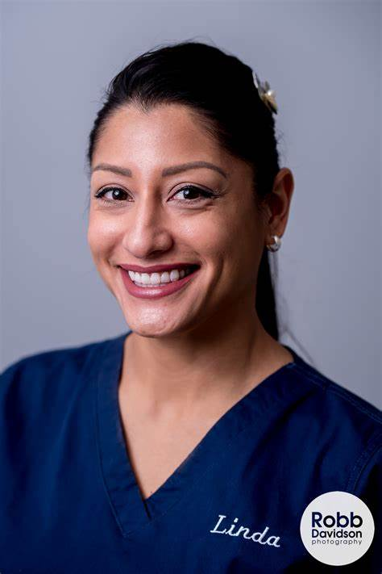

The Team
At Ophcare, our team of skilled ophthalmologists, dedicated optometrists, knowledgeable technicians, and caring counselors work collaboratively to provide exceptional eye care. Each member contributes expertise and passion to their role, ensuring patients receive the highest quality treatment and support. This team exemplifies the power of teamwork, combining advanced knowledge of cutting-edge procedures with a deep commitment to patient care. From detailed diagnostics to personalized surgical guidance, they approach every case with precision and compassion. Counselors offer reassurance, technicians ensure seamless procedures, and optometrists design tailored solutions to optimize vision outcomes. Driven by a shared mission to improve lives, their dedication fosters trust and excellence in every aspect of care. With an unwavering commitment to continuous education and innovation, this cohesive group empowers patients to achieve healthier vision and an enhanced quality of life. At Ophcare, the team isn't just a collection of professionals—they are a united family working toward the common goal of transforming lives through better vision.Surgeons
Dr. Elizabeth Harper is a distinguished American ophthalmologist known for her dedication to innovation and patient care. She received her medical degree from Stanford University, followed by a residency in ophthalmology at the Mayo Clinic. With over 20 years of experience, Dr. Harper specializes in glaucoma management and advanced cataract surgery, helping thousands maintain and restore their vision. She has received multiple accolades, including the American Academy of Ophthalmology's Achievement Award for her groundbreaking work. In addition to her clinical expertise, Dr. Harper is a passionate educator, mentoring young physicians and contributing to global efforts in promoting eye health awareness.
Dr. Maria González is a renowned ophthalmologist dedicated to advancing eye care and vision restoration. She earned her medical degree from Harvard Medical School and completed her residency in ophthalmology at the prestigious Johns Hopkins Wilmer Eye Institute. With over 15 years of experience, Dr. González specializes in cataract and refractive surgery, helping thousands of patients regain clear vision. A trailblazer in her field, she has authored multiple research papers and pioneered techniques in minimally invasive procedures. Beyond her clinical work, she is an advocate for global eye health, organizing outreach programs to combat preventable blindness in underserved communities.
Dr. Kenji Tanaka is an accomplished Asian ophthalmologist recognized for his expertise and dedication to advancing eye care. He earned his medical degree from the University of Tokyo and completed his residency at the Bascom Palmer Eye Institute, one of the top ophthalmology programs in the United States. With over 15 years of experience, Dr. Tanaka specializes in corneal and refractive surgery, helping patients achieve clearer vision through cutting-edge techniques. He has published influential research on advanced surgical methods and has been a keynote speaker at international conferences. Dr. Tanaka is deeply committed to patient education and global initiatives to reduce preventable blindness.